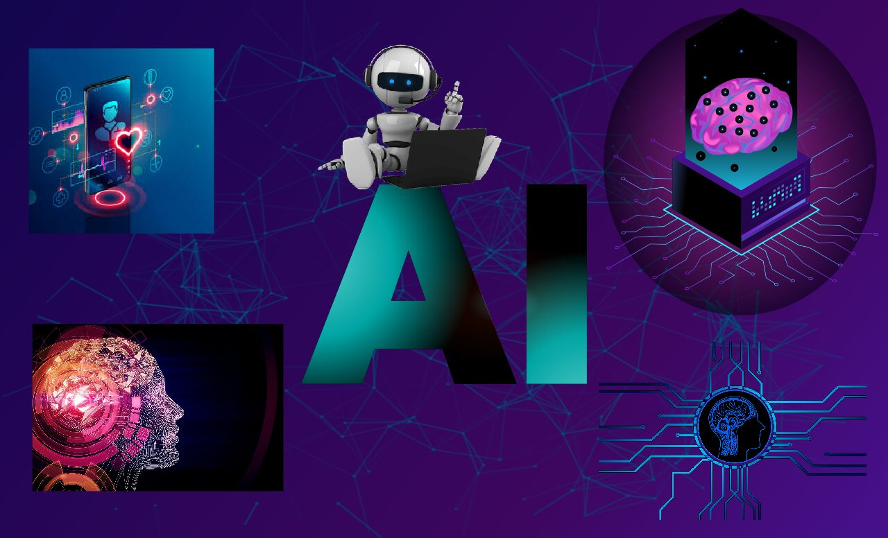

Inteligencia Artificial
¿Qué es realmente la Inteligencia Artificial?
2 de octubre de 2026Desmontamos mitos y explicamos la diferencia entre IA, machine learning y deep learning con ejemplos del día a día.
Leer más